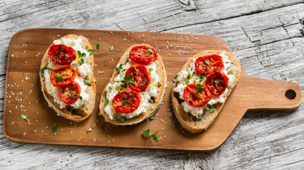

Italian food is more than just pizza and spaghetti. Italian food is bold and satisfying without being heavy. It's rich and textural and uses a whole palette of flavors.Try out the variety of food here from traditional to the modern.
antipasto
A great antipasto bite to start your meal with.
Juicy tomatoes and mozzarella cheese salad topped
with freshly made pesto sauce.
Semifreddo
Semifreddo, is a class of semi-frozen
desserts.The principal ingredients
are usually eggs,sugar and cream.
It has the texture of frozen mousse.
It is often called an ice-cream cake,
but a true ice-cream cake has layers of
cake and ice-cream.
Bruschetta
Bruschetta is an antipasto (starter dish) from Italy
consisting of grilled bread rubbed with garlic and topped
with olive oil and salt. Variations may include toppings
of tomato, vegetables, beans, cured meat,
or cheese(mozzarella).

Pizza Margherita
Fancy a pipping hot pizza, fresh out of the oven?
Create one at home! One of the most loved
Italian dishes, here's the recipe of
'Pizza Margherita'! Need we say more?
Risotto
Risotto is a northern Italian rice dish
cooked in a broth to a creamy consistency.
The broth can be derived from meat, fish,
or vegetables. Many types of risotto contain
butter, wine, and onion. Saffron was
originally used for flavour and
its attractive yellow colour.
tiramisu
The delightful tiramisu recipe with sponge
fingers soaked in coffee, layered around and
smeared with a creamy mascarpone mixture.
The word 'tiramisu' in Italian means
'pick-me-up'.Owing to its caffeine
kick it sure does!
Panna cotta
Panna cotta, a molded chilled dessert popular
throughout Italy, is easy to make and can be
prepared in advance. It looks and tastes
wonderful with ripe red fruits such
as raspberries, strawberries, or sweet cherries.
meatballs
Three seasoned meatballs atop a bed
of pasta covered in a rich, meaty tomato sauce.
Served with a side of shredded Italian cheeses
and garlic toast.
Bon Appetite !